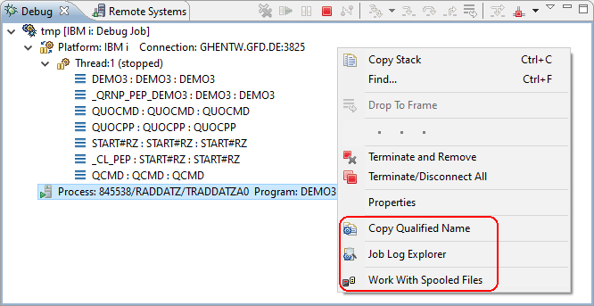

The following menu options have been added to the stack context menu. Once that your applications stops at a breakpoint right-click the Job node to select one of them.

This option is contributed by the iSphere for RDi 9.5.1.3+ feature.
It copies the qualified job name formatted as jobNbr/userName/jobName to the clipboard.
This option is contributed by the optional iSphere Job Log Explorer for RDi 9.5.1.3+ feature.
It opens the iSphere Job Log Explorer for the selected job.
This option is contributed by the iSphere for RDi 9.5.1.3+ feature.
It launches the iSphere Work With Spooled Files view for the spooled files created by the job.